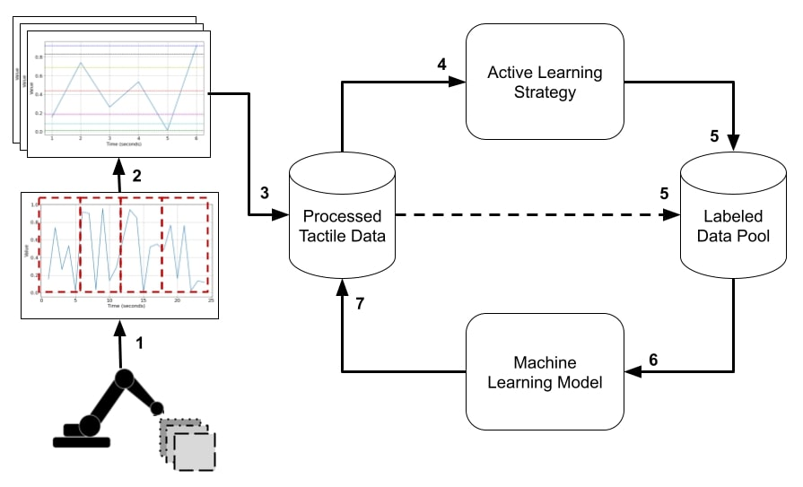

Conducted preprocessing and in-depth analysis of tactile sensing data collected from the exploratory
movement of a robotic finger to generate meaningful features.
Developed a hyperparameter tuning function to optimize sliding window sizes for effective feature
extraction.
Developed an Active Learning framework incorporating three strategic algorithms namely Uncertainty
Sampling, Query by Committee and Expected Model Change.
Integrated machine learning models including Random Forest, Decision Tree, XGBoost and
ExtraTreesClassifier for accurate texture classification.
Utilized statistical analysis techniques such as Wilcoxon hypothesis testing to evaluate the
significance of window sizes along with the active learning strategy and machine learning models.
The developed framework for tactile texture classification

1) Data collection from exploratory
movements; 2) time series data is partitioned into temporal; 3) statistical attributes extraction; 4)
using
AL strategies to rank instances; 5) the AL strategy selects top-ranked instances; Machine-learning model
built with the instances in the labeled pool; 7) classify all instances in the processed tactile data
pool
Additional Information
The above work including the figure has been published in the Journal of Frontiers in Robotics and AI.
Link